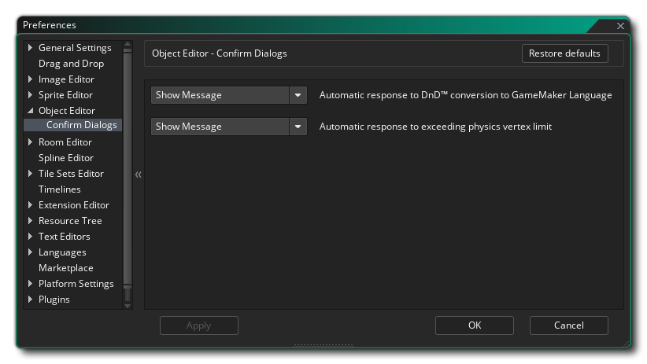

Las Preferencias del Editor de Objetos se usan para definir ciertas propiedades para la ventana del editor de objetos. La sección principal contiene la siguiente opción:
- Agregue contenido de ayuda predeterminado: de manera predeterminada, esta opción está habilitada y todo lo que hace es agregar un comentario simple al editor de códigos para todos los eventos nuevos para recordarle que puede agregar allí su código.
- Contenido de evento predeterminado: aquí puede editar los comentarios que se agregan de manera predeterminada en la ventana de código para nuevos eventos.
La siguiente subcategoría también existe para el Editor de Objetos:
Esta sección trata de los diálogos que pueden mostrarse al usar el Editor de objetos, con la siguiente opción disponible:
- Respuesta automática a DnD & trad; conversión a Gamemaker Language: puede usar el botón derecho del mouse
dentro del espacio de trabajo Arrastrar y soltar para seleccionar la opción para convertir todo el Arrastrar y soltar para ese evento en código GML. La acción predeterminada aquí es mostrar un mensaje de advertencia que le pregunte si desea continuar, pero puede configurarlo en "Aceptar" y el cuadro de diálogo no se mostrará antes de la conversión.
- Respuesta automática al límite de superación física de vértices: esta opción se puede utilizar para controlar el mensaje emergente que se muestra cuando se supera el número de vértice permitido en el editor de formas físicas. La acción predeterminada aquí es mostrar un mensaje de advertencia, pero puede configurarlo como "Correcto" y no se mostrará el cuadro de diálogo.